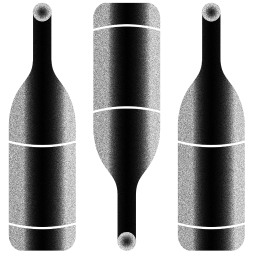
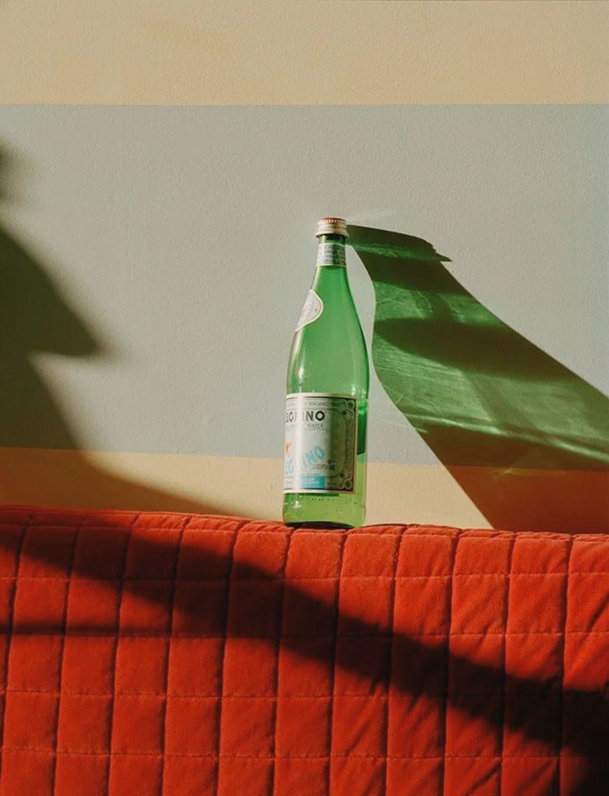

THE 
NEIGHBORHOOD
INDEX
The trends shaping local business—
straight from the source.
We looked at the data—from Square sellers to Cash App users—to find the patterns that matter. These are the shifts defining local commerce across the country right now.
THE DEATH OF
THE DOLLAR
MENU
Fast-casual is the new fast food. Consumers are trading drive-thrus for counter-service spots with cleaner ingredients and $14 bowls. Square data shows fast-casual spend up year-over-year, while traditional QSR flattens. People will pay more—they just want to feel better about it.
NEIGHBORHOOD
LOYALTY IS THE
NEW BRAND
LOYALTY
Your corner store is beating the algorithm. Repeat transactions at independent, single-location businesses are outpacing chains. Shoppers are choosing the bodega over the app, the local bookshop over next-day shipping. Community is the product now.
THE 6PM
ECONOMY
Evening spending is spiking—and it's not just dinner. From fitness classes to retail therapy, the post-work window is the new prime time. Businesses open past 6PM are seeing disproportionate growth. The 9-to-5 is dead; the 6-to-9 is thriving.

THE SOBER
CURIOUS ARE
SPENDING
Non-alcoholic options aren't a niche—they're a line item. Bars and restaurants with NA menus are capturing spend from a growing segment that wants the social experience without the hangover. Zero-proof is a revenue stream now.
TIPPING
CULTURE HIT A
CEILING
Consumers are tipping more selectively. After years of tip-screen fatigue, average tip percentages are stabilizing. People still tip—but they're thinking harder about when and why. Service quality matters more than the prompt.
A CULTURAL INTELLIGENCE BRIEFING FOR YOUR BUSINESS.
Pick your industry and location for a trend briefing you can listen to anywhere. Selling with Square? Sign in—yours is already waiting.